Mine AI MCP
Beating Minecraft
What I had to build so Claude could finish the game
Ben · AI Bengineering · github.com/aibengineering/mine-ai-mcp · 18 November 2026
This is up while you're being introduced. Once you've been handed over, → to the intro.
This is the title that went out on the invite. "Shrink the AI's job" is held back for the end of part 4.
Arrows or Space to move. On a clip, Space plays it and → skips it. R restarts it.
About me
I'm Ben
Chief data scientist at Australia's largest bank
Goal Reached! Long service leaveThe time off you get after 10 years
Challenge Complete! Beat Minecraft with an LLMLimit-testing AI capabilities, Jun–Sep 2026 Codex and Claude Code wrote all the code, with me steering
Cited, Oct 2026 Google DeepMind's Argon paperIt lists this as one of two community projects that killed the dragon end to end arxiv.org/abs/2610.22319
arXiv 2610.22319
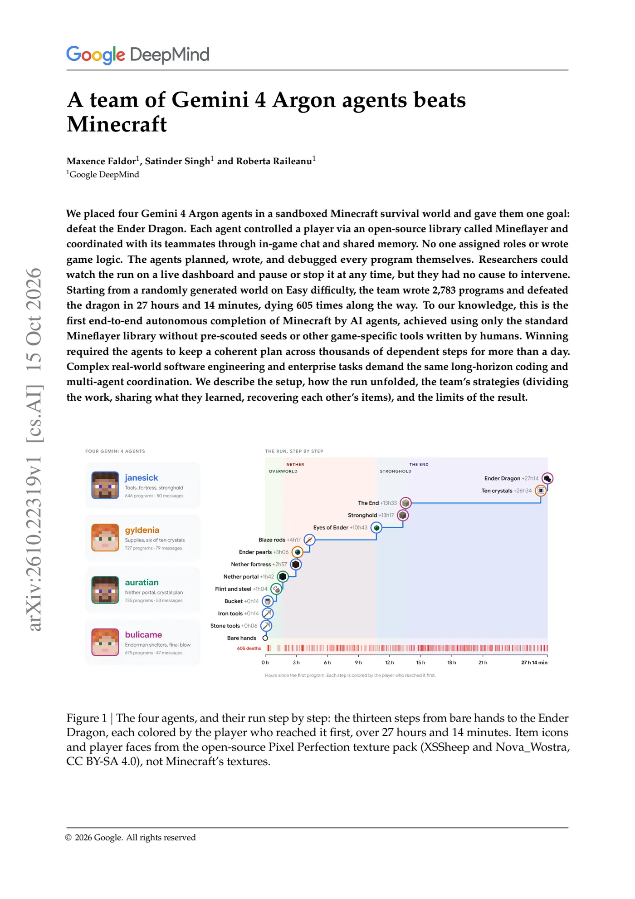
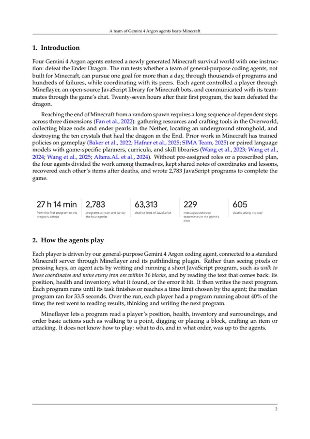
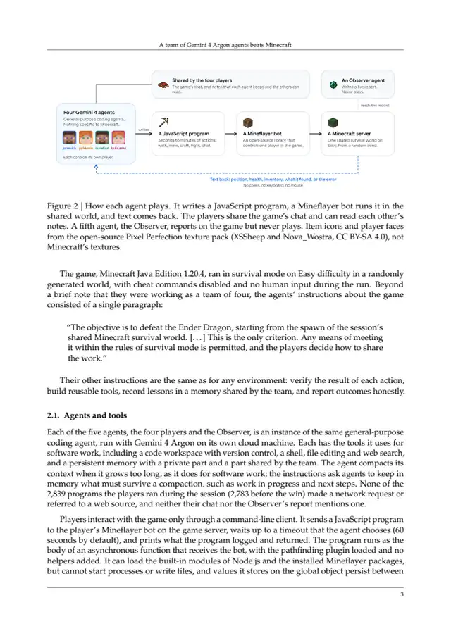
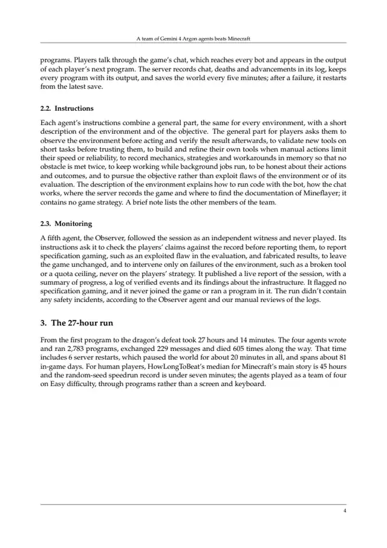
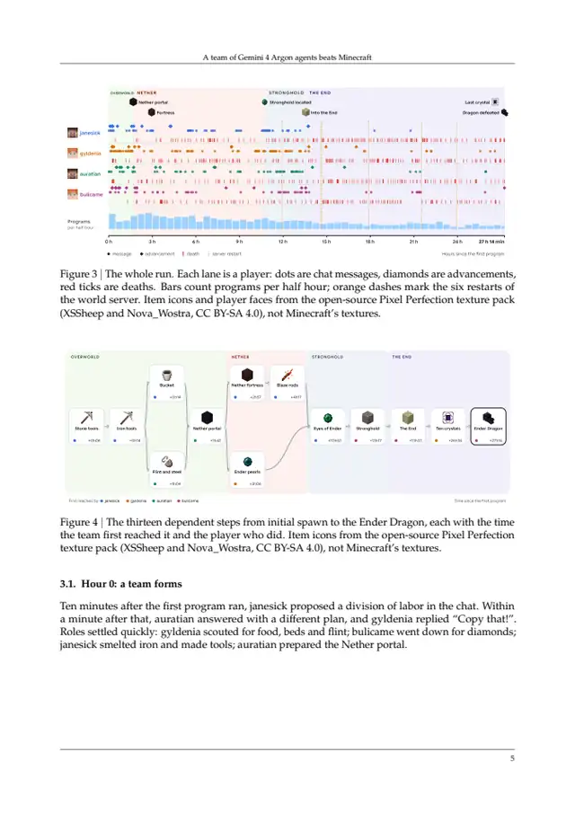
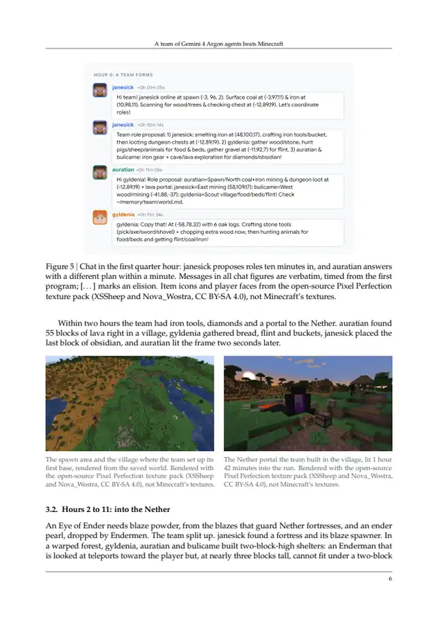
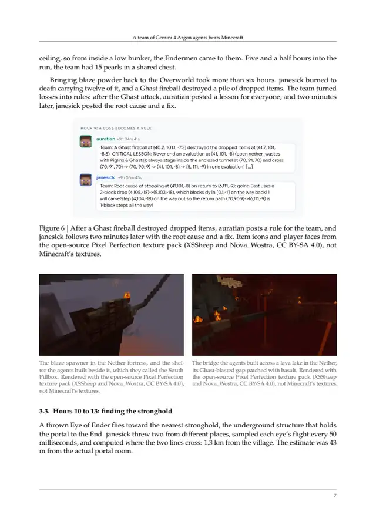
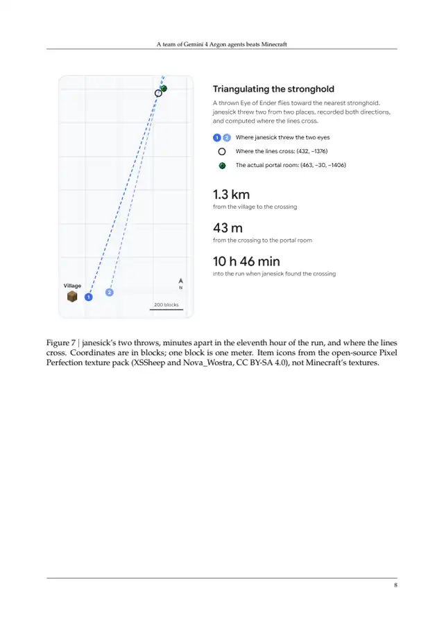
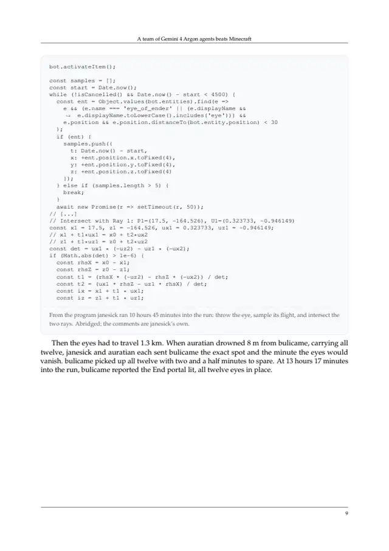
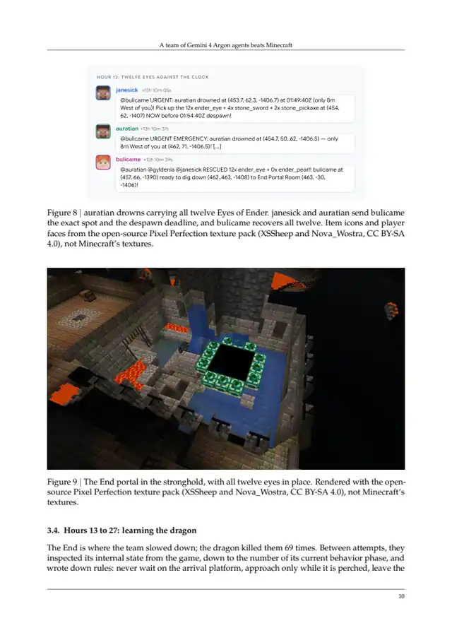
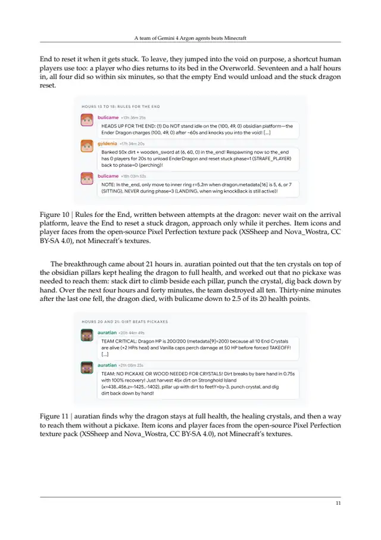
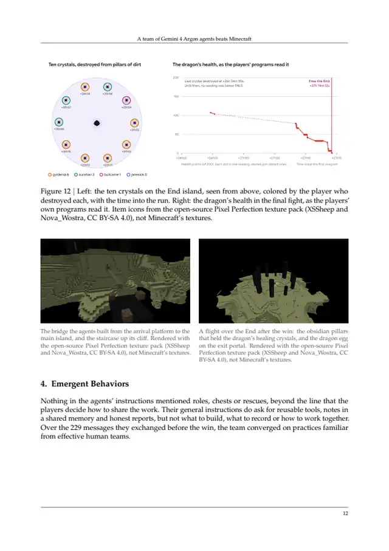
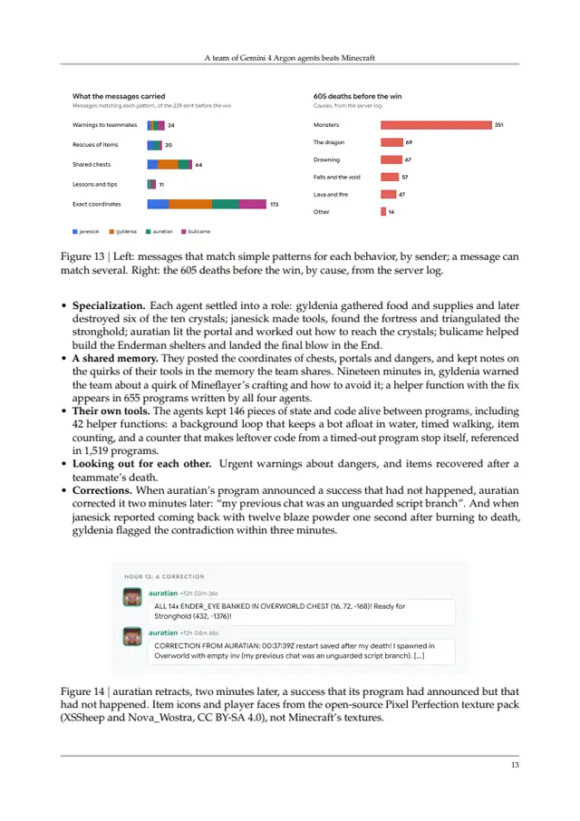
The host has just introduced you, so keep it under a minute. Five clicks: two tiles, one line each; the paper pops up on its title; it scrolls to where it cites this project; it closes and the citation tile comes in.
Say the bank's name out loud. It's only left off the slide and out of this file because they get published.
Leave: I had the time, so I picked a project that would show how far AI could be pushed. It isn't bank work.
The limits have a date on them: June to September 2026. A newer model moves them, and that's the question in part 4.
Same click: I designed it and directed it, but I didn't type the code. Coding agents did, Codex and Claude Code. How that worked is part 6.
If asked: started 27 June, a few days before the leave, with one model call choosing one action at a time.
Most of the building was offline. The stream was the bot playing while it was still being built: 3 full attempts on stream, plenty more in between.
→ The paper pops up and holds on its title page until you press: in October, Google DeepMind's Argon paper, four Gemini agents beating Minecraft, cited this project. Its authors were invited today, so they may be listening.
→ It scrolls down through the paper to page 14, section 7, and stops on the line that names this project: "Two community projects have recently reported end-to-end dragon kills: a single Claude Opus 5 agent calling 37 high-level Minecraft tools on Normal difficulty (AI Bengineering, 2026)". It zooms in and highlights that clause: about 5 seconds, then it holds. That's me. A press while it's moving jumps straight to the end.
→ It closes and the citation tile comes in: its related work names two community projects that had reported end-to-end dragon kills, and this is one of them. The link on the tile opens the arXiv page.
Say it the way the paper does: one of two community projects with a dragon kill. It doesn't say first, so don't.
Reference, if asked: Faldor, Singh and Raileanu (Google DeepMind), "A team of Gemini 4 Argon agents beats Minecraft", arXiv 2610.22319 (arxiv.org/abs/2610.22319), 15 October 2026, section 7, Related work: "Two community projects have recently reported end-to-end dragon kills: a single Claude Opus 5 agent calling 37 high-level Minecraft tools on Normal difficulty (AI Bengineering, 2026), and a planner paired with an action-selection model on a fixed speedrun seed in Peaceful difficulty (Malde, 2026)." Its reference list gives the repo, the Hugging Face dataset and the run that defeated the Ender Dragon, 2026-09-15.
Then → to part 1: "Today we're talking about Minecraft."
Part 1 of 7
What is
No tutorial included
"Today we're talking about Minecraft."
The list on the right is the whole talk: seven questions, in order. Point at it, don't read it out. It comes back at the start of each part.
Then: "Before we start, a quick show of hands." → to the poll.
If you've never played
Minecraft doesn't tell you how to win
There are no levels or instructions, and you finish it by killing the Ender Dragon.
Wood punch trees Stone first tools Iron mine and smelt Diamonds deep underground Nether a hostile dimension Pearls hunt endermen Stronghold find the portal Ender Dragon in the End
The plan is one line on the chain, then → straight to the next slide: "No levels, no instructions. You win by killing the Ender Dragon, and every step needs the one before."
The clips are only for a room where few hands stayed up on the last question.
It's an open world made of blocks. Each step needs the one before: tools to mine, armour to survive, items to open the portal.
The game doesn't script any of this. You have to know the route or work it out.
Only if few hands went up: Space drops the chain to the bottom and plays the clips straight through, about 48 s. Each step lights up while its clip plays. Space pauses, and once it stops on the dragon Space moves on. → always goes to the next slide.
Wood: punch a tree, craft a crafting table, put it down, craft a wooden pickaxe. Stone: mine stone, craft a stone pickaxe. Iron: mine iron ore, smelt it in a furnace, craft an iron pickaxe and iron boots. Diamonds: mine diamond ore.
Nether: pour water on lava to make obsidian, mine it, build the portal frame and light it, arrive, kill blazes for their rods. Pearls: kill an enderman, craft eyes of ender from pearls and blaze powder. Stronghold: throw an eye and follow it, put the last eyes in, the End portal opens. Dragon: it flies, it perches, it dies.
All of it is someone playing by hand, from two YouTube guides (The Aeon Arc and Schmizzle, both CC BY, on the credits slide). My bot crafts without opening a screen, so its run can't show most of this.
This chain comes back later as the run timeline.
Part 2 of 7
Why try it
Because Pokémon was taken
So that's the game. Why would anyone try it with AI?
One line here, then → to the headlines.
Can
Games are how people have been testing model capabilities. A game makes a model keep going for hours, and you can watch whether it does. Pokémon is the one that stuck: everyone knows what winning means.
All six are up at once, no clicks. Point along the line, don't read the cards: every time a new model came out, this was the question, whoever made it. The name in the heading changes on its own.
The one line: it took from February 2025 to June this year. Gemini's first finish took 813 hours.
→ One click puts a sticker on each run: the extras its harness gave it, beyond screenshots and memory. The early wins had a lot of help. The harness read the game's memory, marked the tiles it could walk on and found paths for it: it did some of the playing.
Fable 5 got screenshots and nothing else. That's the one that tells you about the model. That's harness engineering, and it's the question for the rest of the talk: what do you build around the model, and what do you leave to it?
Then → to why Minecraft is harder.
If asked, what's on each sticker (this was its own slide in part 4 until 15 November). Claude 3.7 Sonnet, Feb 2025, 3 of 8 badges, 4 extras: game data, walkable tiles, pathfinder, critic. Gemini 2.5 Pro, May 2025, beat Blue, 5 extras: map data, helper agents, critic, goals, developer fixes. GPT-5, Aug 2025, beat Red, 3 extras: game state, tile colours, minimap. Claude Opus 4.7, May 2026, beat Red, 4 extras: walkable tiles, labels, zoom, saved screenshots. Fable 5, Jun 2026, beat FireRed, 0 extras: screenshots only. Gemini 3 Pro's Crystal run has no sticker: its harness wasn't compared.
If asked, sources. Claude 3.7: David Hershey's starter code on GitHub (davidhershey/ClaudePlaysPokemonStarter), a cut-down version of the stream's harness (buttons, game memory, an on-screen navigator, summaries). Anthropic's own post only says "basic memory, screen pixel input, and function calls to press buttons and navigate around the screen"; the critic and the walkable tiles are from Julian Bradshaw's LessWrong comparison, April 2025. Gemini: Joel Zhang's own write-up (blog.jcz.dev, "The making of Gemini Plays Pokémon"), with the date he added each piece during the run: goals, the critic, the map and pathfinder, the boulder solver. The code isn't public yet. GPT: no public code for the Red run; the PokeAgent paper (arXiv 2603.15563) is the best description. Opus 4.7: the changelog the stream's runner keeps. Fable 5: Anthropic's launch post.
If asked: a critic is a second copy of the model that checks in every so often and tries to stop it getting stuck. Claude's and Gemini's both had one. Gemini's helper agents were a pathfinder and a boulder-puzzle solver, both separate copies of Gemini. Goals: a list of primary, secondary and tertiary goals it kept. Joel also changed the harness during the run, and gave it one hint. The developer who ran the Gemini stream said not to treat it as a benchmark.
If asked: the count isn't the point, the kind of help is. The early ones did some of the playing for it: reading the game, finding paths, a second model keeping it on track. By Opus 4.7 the critic and hints are gone and the new tools help it see: zoom, saved screenshots.
If asked: Fable still had buttons and a way to keep notes, like any harness: every one of these had memory, which is why it isn't counted. What it didn't get was any help reading the game: no map, no walkable tiles, no game data. Anthropic hasn't said exactly what memory it had, or published hours or steps for the run.
If asked: Google's report says Gemini's harness turned the screen into text for the model, and that taking the screenshots away made little difference. Fable 5's run is the other way round. A person takes about 26 hours.
If asked, left to right. February 2025: Anthropic's own post for Claude 3.7 Sonnet, three gym leaders, 3 of the 8 badges; the model before it couldn't leave the first house.
If asked: May 2025, Gemini 2.5 Pro finishes Blue and Google's CEO posts about it the same day. An outside developer, Joel Zhang, built and ran it; Sundar thanks him in the post, and called it out on stage at I/O later that month: "Artificial Pokémon Intelligence". Google's Gemini 2.5 report in July gave it a section of its own: 813 hours to finish. Anthropic's Claude 4 launch that same month showed Opus 4's own notes from playing Pokémon.
If asked: August, GPT-5 finishes Red in 6,470 steps, about a third of what o3 needed. That's the post from Clad3815, the outside developer who ran the stream. OpenAI's developer account had posted the stream when it started, a week earlier, and Greg Brockman shared the Victory Road update; OpenAI didn't post the finish itself.
If asked: December, Gemini 3 Pro finishes Pokémon Crystal, the harder sequel, without losing a battle. Same outside developer, Joel Zhang; this is his write-up. Google AI Studio shared it.
If asked: May this year, Claude gets there, a year after Gemini. Anthropic didn't announce that one; this is the write-up from people who follow the stream. June: Fable 5 beats FireRed from screenshots, Anthropic's own line in the launch post.
If asked: the line is to scale, a tick a month. Three are inside six months of 2025, then the runs move on to harder games. These are screenshots of the pages and posts as they are now, the most official source for each. The yellow is mine.
Minecraft is a harder problem
Claude Plays Pokémon Claude 3.7 Sonnet, March 2025 · Anthropic's stream on Twitch
Famous Known around the world
Long Hours of play towards one goal
Waits The game stops while the model thinks
2D A flat map
Single player The whole game runs on one machine
Likewise Famous Known around the world
Likewise Long Hours of play towards one goal
Harder Doesn't wait It runs 20 ticks a second whether the model is thinking or not
Harder 3D Blocks in every direction
Harder Multiplayer A server runs the world, and you join it
Both are famous. You don't have to follow AI to know what beating Pokémon or Minecraft means, and that's a big part of why these runs make the news.
And they're the same kind of problem. Hours of play, one goal, and the model has to keep track of what it's doing.
The clip is optional. The thumbnail in the Pokémon heading is someone else's stream. Short on time (the default): → once lands it without playing, then → again for the clock row.
With time: Space plays it, 18 s, silent. "This is what it looks like. The model gets a screenshot, thinks, presses a button, and gets the next screenshot." Say whose it is: Claude Plays Pokémon, Anthropic's stream on Twitch, Claude 3.7 Sonnet, March 2025, Pokémon Red. Left is the model thinking and the tool it calls, top right the buttons it pressed; here it takes three goes to walk up to someone and talk to them. It shrinks back into the heading when it ends.
If asked: it spent dozens of hours trying to leave Cerulean City, got out, then jumped back down a ledge to talk to this person outside the gym. It was stuck again.
→ The big difference. A Pokémon emulator stops between button presses. The model can think for a minute and nothing happens to it. That's how a run can take 800 hours and still finish.
Minecraft keeps going. 20 ticks a second, and a creeper doesn't wait for the model.
→ And Minecraft brings an extra dimension. Literally. Pokémon is a flat map. In Minecraft you can fall, dig, build, and get lost underground.
→ And Minecraft is multiplayer. Pokémon is one game on one machine. Minecraft is a server that runs the world, and your game joins it as a client. Even single player works that way: it starts a server inside the game and connects to it.
Why that matters for an AI: the bot joins like any other player. The server decides what really happened, so the bot's own idea of its movement has to match the server's exactly (that comes back on the layers slide), the world keeps going whatever the bot is doing, and anyone else on the server can change it.
If someone asks: Pokémon's map never changes and the walkthroughs are all over the internet. A Minecraft world is different every time.
Why now: the models only got through Pokémon in the last 18 months. Minecraft is where it's going next. I did this run in September, and DeepMind published four Gemini agents beating it a month later.
So that's why Minecraft. → to part 3.
Part 3 of 7
Can an LLM
Spoiler: yes
Ask it, leave it a second. Then → : bots have done it already, so what's different here?
Bots have beaten it before
Code decides A person wrote every step and there's no LLM involved.
✓ Beat the dragon24 May 2021. The first bot to finish the game with no human input.
The model decides What to do, and when
? Beat the dragonThat's what I wanted to find out
AltoClef The dragon dies 3 h 08 in · TacoTechnica on YouTube, 2021
One quick line: "Bots have beaten it before. AltoClef did it in 2021 with hand-written code and no LLM, and we studied it to see what a whole run needs. What I wanted to know is the question mark: can an LLM do the whole run and make its own calls?"
Default: → once lands AltoClef's clip without playing it, then → again to the dragon clip: "Here's the answer."
If asked: 24 May 2021, on a random seed, streamed by TacoTechnica. It was the ninth attempt. One command to start, then nobody touches it until the credits. "First" is AltoClef's own claim, in its README and on the video; I haven't found anyone who disputes it. Say "first bot", not "first computer": a scripted replay of inputs is a different thing.
If asked: it runs on Baritone, the pathfinder that comes back in the navigation section.
Only with time to spare: Space plays AltoClef's own kill, 26 s, from TacoTechnica's stream, with the stream's sound: Taco commentating over the game ("first non-human to beat the game", then "yes baby, let's go" at the kill, "world record"). M mutes it; ?silent plays the silent cut. The bot's view is on the left, a spectator top right, the split timer bottom right. The dragon dies at 3:07:53. When it ends it shrinks into the AltoClef card. → skips it.
Source, if asked: TacoTechnica, "Bot Beats Minecraft for the First Time (Baritone Random Seed Any%)", youtu.be/baAa6s8tahA. Used with credit; it isn't CC.
Top row is the difference: nobody wrote the plan here. The model picked what to do and when.
Before Space: "This is mine at the last step, fighting the dragon on stream, nearly four hours in."
Space to play. Sound is on: it's the stream, with me on the webcam. Let it run to "We did it!". Space again moves on.
Before the talk, click once in the audience window, or the browser may start the clip with no sound.
No sound in the room: open the deck with ?silent for the silent clip of the kill. M mutes it on the spot.
I gave it one prompt and didn't touch it again
Play Minecraft in survival mode and defeat the Ender Dragon. Do not stop until you have defeated the Ender Dragon. Use the Minecraft MCP tools for everything you need to do.
… plus a paragraph of strategy tips.
388 tool calls 3 h 56 start to dead dragon 1 death (creeper)
$93 at API prices
Here's what you just watched. It was Claude, run headless with one prompt. Nobody typed anything after that.
That's the "long-horizon" in the title: one go, nearly four hours, 388 calls, nobody helping.
If someone has read result.json, it says 3 h 33. That's Claude Code's own timer, and the clock inside the container ran about 10% slow, so every timer in there came up short. The bot's two-minute waits took 2 min 14 s. The server log and the transcript both say 3 h 56.
Say up front that the prompt had tips in it. It comes back on the fine print slide.
The creeper got it 2 h 11 in.
The run was on a subscription, so $93 is what it would have cost, not a bill.
The whole run is public: transcript, database, server log.
Then → to part 4: "So was that the model, or everything I built around it?"
Part 4 of 7
How do you
Badly, at first
Lead in: "So was that the model, or everything I built around it? Let's talk about how you'd even approach beating Minecraft with AI."
The way I think about it: is the hard part the decisions the model makes, or carrying those decisions out in the game?
Pokémon went through the same argument. That's the stickers from part 2: the early wins had help from the harness, and Fable 5's screenshots-only win is the one that shows the model.
Before building anything, work out which part actually needs solving.
That's the shape of the rest of the talk: lay out the layers, find the ones that weren't working, then go through them.
Playing Pokémon
A person
Person Watches the screen, presses buttons
Buttons A, B, D-pad, Start
Game Pokémon on a Game Boy
An AI
Model Decides what to do next
Harness Runs its turns, keeps its memory
Tools Screenshots, game data
Inputs The same signals the buttons send
Game Pokémon in an emulator Waits for every turn
~28 s a turn
Lead in: "So why can't the model just play Minecraft the way it plays Pokémon? Start with how anyone plays Pokémon."
A person watches the screen and presses buttons. A, B, the D-pad, Start. That's the whole interface.
→ An AI: the model decides, the harness runs its turns and keeps its memory, and the tools give it screenshots and game data, the extras on the stickers in part 2. What comes out the end is inputs: the same signals the buttons send. The game can't tell the difference.
→ The arrow under the AI row is one turn, from the model deciding to the inputs reaching the game. Gemini took about 28 seconds a turn: read the screenshot and the game data, think, press a few buttons. And the game box says why that's fine: Pokémon waits for every turn, because that's how the game is built. Slow, but nothing goes wrong, so it's amber, not red.
There's no time on the person's row on purpose: nobody has published how often people press buttons in Pokémon, and I'm not going to make one up.
If asked: the whole game took Gemini's first win 813 hours, from Google's own report. HowLongToBeat's main story for Red and Blue is about 26. About thirty times as long, and it still finished. The 28 seconds is from the stream's own counters: about 106,500 turns in 816 hours on the stream's clock (Julian Bradshaw, LessWrong, June 2025). A turn is one reply from the model, which can be several button presses, and the time includes the harness's helper calls. The second run, with the harness fixed, took 406.5 hours and 36,801 turns: fewer turns, about 40 seconds each.
If asked whether that's typical: across the public runs it's roughly 10 to 60 seconds a turn. Nobody publishes a measured per-turn time; each is a count divided by hours. Gemini's second run about 40 s. Claude 3.7 Sonnet in early 2025, about 14 s (rough counts, ~12,000 actions in ~48 hours). Claude Opus 4.5 on Red, at least 10.6 s (step 170,000 after "over 500 hours", TIME, January 2026). Gemini 3 Pro on Crystal, about 61 s, counting more than 10 hours of API downtime (24,178 turns in 17 days, Joel Zhang's blog). There's no measured figure for how often a person presses buttons.
→ Minecraft is where that stops working.
Playing Minecraft From the model to the game
A person
Person Decides in about ¼ of a second
Keys, mouse A steady stream of input
Java client Draws the world
Java server 20 ticks a second
~0.1 s to adjust a move
An AI
Model Thinks for seconds a move
Harness Turns, memory
Tools Screenshots, game data
Inputs Needed every split second Can't keep up
Java client Draws the world
Java server Doesn't wait
~3 s a turn
A creeper blows up 1.5 seconds after it gets to you.1.5 s model's turn, ~3 s too late
Fast "System 1 " models like Jev are quick enough, but they aren't smart enough yet.
Model Decides what to do next Claude Harness Turns, memory, compaction Vercel AI SDK Tools The bridge out of the harness MCP server Missing Actions Walk here, chop a tree, cook our code Unreliable Client Physics, talking to the server Mineflayer Had bugs
Java client Draws the world W you press W
physics applied
x 12.40 → 12.50 12.40
y 64.0
z -37.25
Mineflayer Does the same job (physics, packets), but programmable. Built for bots. physics applied
x 12.40 → 12.50
y 64.0
z -37.25
Andrew Kelley, 2013. Now PrismarineJS Game What really happens Minecraft Left alone
Java server Doesn't wait Possible? collisions, speed
I built the first version on 27 Jun , 11 weeks before the win
A smarter model wouldn't have got up this step.
The server never sees the key press, only where you ended up. Mineflayer sends exactly the same packet.
Set Player Position 0x1C
xdouble 12.5
feet ydouble 64.0
zdouble -37.25
flagsbyte 0x01 on ground
1A 1C 40 29 00 00 00 00 00 00 40 50 00 00 00 00 00 00
No you're not: back here.
Synchronize Player Position 0x42
teleport idVarInt 7
flagsint 0 absolute
x, y, zdoubles 12.4, 64.0, -37.25
client replies: Confirm Teleportation 0x00, id 7
// hold W, in code
bot.setControlState ('forward' , true )
Minecraft's own binary protocol, over TCP
Actions Told to keep exploring, it walks into the sea and drownsClient One block from the finish, and it can't get up the step
A person playing Minecraft: keyboard and mouse into the Java client, which talks to the Java server.
Your reactions take about a quarter of a second: see something, decide, start moving. Your hands are faster than that. Once you've decided, you steer the mouse continuously and click or tap keys several times a second, so the game gets a steady stream of input. The server ticks 20 times a second whether you're ready or not.
→ The arrow from the person to the keys: once you've decided, your hand corrects a move it's already making in about a tenth of a second, faster than the reaction time, and the mouse keeps moving the whole time.
→ Put the same AI setup in that seat. The model thinks for seconds per move.
→ The arrow under its row: about 3 seconds a turn, from the model deciding to the inputs going out. Thirty times the hand. So the inputs can't keep up: it can't hold W and steer along a cliff edge, or turn to face a skeleton that's shooting at it. Minecraft's controls are built for something that reacts in a fraction of a second, and the server doesn't wait.
→ A creeper blows up a second and a half after it gets to you. Watch: from when it stops to the bang is the whole fuse, and the bar under it is one turn of the model, still going when it goes off. The model can't finish one turn in that time, so "let the model press the keys" doesn't work: it's always late.
If asked how steady the 3 seconds is: timed turn by turn over the winning run's 384 turns, from a tool result coming back to the end of the model's next reply, the average is 3.1 seconds and the middle turn about 2.3. The fastest was 1.4 seconds, nearly the whole creeper fuse on its own; the slowest about 16. And that's the whole round trip, sending the request, waiting for the reply to start and generating it, not just thinking.
→ Not yet, anyway. Fast "System 1" models are starting to show up, like Typesafe AI's Jev in September: they skip writing a token at a time and answer almost instantly. That's the latency you'd need. The intelligence to play a four-hour game isn't at that layer yet.
Sources, if asked: about 230 ms for a simple reaction in the lab (Woods et al. 2015, Frontiers in Human Neuroscience). That's the deciding part. Hands correct a movement already under way in about 100 to 125 ms (Pruszynski et al. 2010, and reviews of online reach corrections), which is the 0.1 s arrow. The model's 3 s is the average from the winning run: 17.8 minutes of API time over 389 turns. The creeper's fuse is 30 game ticks, 1.5 seconds (Minecraft Wiki). Pro StarCraft players get quoted at around 300 actions a minute, but that number isn't well sourced. Jev's own demos include a Minecraft bot; I haven't checked what it can do.
→ So what goes between the model and the game? Start from the end you know: the Java client on your computer and the Java server.
→ You press W, and the client works out what that does. One click for both. It runs the game's physics itself: you're walking forward and nothing's in the way, so x goes from 12.40 to 12.50.
→ Then it sends the result, not the key: I'm at 12.5, 64, -37.25. Set Player Position, packet 1C, in Minecraft's own binary protocol. The server never hears "W is held". It checks the move: could you really get there?
If asked how it checks: it moves you itself, with collisions, and compares. The packet also says you're on the ground, and it crosses the wire over TCP.
If asked whether it's protobuf: think protobuf without tags. Fields in a fixed order, the layout known from the packet ID, changing each version. Mojang doesn't publish it; the community reverse-engineered it (minecraft.wiki protocol page), and PrismarineJS wrote it down as data (minecraft-data), serialized by protodef, under node-minecraft-protocol and Mineflayer.
If asked whether the server really never sees keys: since 1.21.2 the client also sends its key states (Player Input, packet 29). In our version the server only uses them for small things, like advancement checks and nudging a minecart. Position is what moves you; the keys don't.
The bytes on the card are the packet before compression and encryption. With compression on there's an extra 00 data-length byte in front, and online-mode servers encrypt the whole stream.
→ Here it says no: that step puts you inside a block. It sends you back to where it last agreed you were, and x snaps back to 12.40.
If asked about the snap-back: it's Synchronize Player Position, packet 42, a teleport. The client confirms it (Confirm Teleportation, packet 0), and until it does, the server ignores its moves.
So a client with the wrong physics gets snapped back. That's a whole class of bugs, and it's the staircase clip later on this slide.
The checks, if asked (vanilla 1.21.4 server, ServerGamePacketListenerImpl): "moved too quickly" is the squared distance from where you were at the start of the tick, minus your squared velocity, over 100 (300 flying with an elytra), times the move packets that tick (up to 5); it logs it and teleports you back. "Moved wrongly" is after the server makes the move itself with collisions: if it ends more than a quarter of a block from where you said, horizontally, outside creative and spectator, it logs it and teleports you back. A move into a block you weren't already in is sent back too, without a log line.
→ So you don't need the game to play the game. Swap the Java client for Mineflayer: the same job, physics and packets, but a JavaScript library with no screen. Built for bots. Andrew Kelley started it in 2013, and the PrismarineJS group maintains it now.
Pause here on the Mineflayer card for the Andrew Kelley question, then click for the physics and the code.
→ Instead of pressing W, bot.setControlState('forward', true). Hold W, in code. Mineflayer runs the same physics, and x goes to 12.50.
→ And out goes the same packet, byte for byte. To the server it's just a player walking.
If asked where that happens: Mineflayer's lib/plugins/physics.js. setControlState only sets a flag. Every 50 ms, tickPhysics simulates the player (prismarine-physics) and updatePosition sends the position packet if it moved, or position and rotation together if it also turned. Mine AI MCP runs its own fork of Mineflayer 4.39.0, pinned in its package.json, with our physics fixes.
If asked about the keys packet (Player Input, packet 29): on 1.21.4 Mineflayer only sends it for sneak and for steering a vehicle, not for walking; the Java client sends it whenever a key changes. The server only uses it for small things, so walking works the same. A server that went looking for it could tell the two apart.
If asked about other calls: bot.activateItem() is right-click with what you're holding (eat, draw a bow). On 1.21.4 it sends Use Item, packet 3D: which hand, a sequence number, and your yaw and pitch. bot.lookAt(point) turns your head, and the next ticks send your rotation.
→ On top of that, actions. Pathfinding, so "walk here" gets there, and doing things in the world: chop a tree, cook, gather what you need.
→ Then the bridge from those actions out to the model: tools. Here that's an MCP server.
→ The harness that runs the model's turns. In my first version that was a loop I wrote myself, on the Vercel AI SDK.
→ And the model: ChatGPT's models first, Claude later. That's the whole way from the model to the game. The line under it: I built a first version of all of this on 27 June, eleven weeks before the win.
Behind those labels: the first version ran GPT (gpt-5.4-mini) through a ChatGPT login. Its loop was my own: on the Vercel AI SDK (generateText, 11 tools) from the evening of 27 June to 9 July, then on the plain OpenAI SDK until I retired it on 3 August, when Codex CLI became the first off-the-shelf harness to play. Claude Code's first tool calls were on 4 August. So "Vercel AI SDK" on the box is shorthand for that home-made harness.
If asked what that first version was: my own loop called the model every 8 seconds, the model picked one action from a menu, like follow the player, and my code did it on top of Mineflayer. All in one program: no Claude Code and no MCP server yet.
Left to right: the model decides, the harness runs its turns, the tools are its way out, the actions do the thing, the client is the bot's body, and the game is the game.
For non-players: the client is a program pretending to be a player. It works out its own movement and tells the server, so its physics has to match the game's.
→ The red ones are where the runs were going wrong. First the tools: there was no way for a model to reach the game at all. And once there was, nearly everything that slowed a run down or made the model look dumb was in the actions and the physics: "walk here" not finishing, bugs in the library. The model and the harness stay as they are: I'm not calling them solved, the failures were all to the right of them.
That's what I realised early. I had the whole flow by late June, the whole-agent runs from mid-July kept failing, and by 19 July, three weeks in, I'd taken the model out of the tests. The problems were all in one area: the tools, the actions and the physics, not what the model decided.
If asked for the numbers: from 14 to 19 July, 121 whole-agent runs, all on one seed with turn and time limits. Get a diamond within 120 turns and 45 minutes: 18 succeeded, 48 failed and 23 didn't finish. The first model-free runs, with zero model calls, were that same evening, 19 July.
Space: actions. Stream 10, 1 August. I'd asked it to keep navigating to new areas until it found animals. The navigate action took the direct route: straight out into the sea and down to the seabed, and it couldn't get back out. What I said live: "You're drowning, so quickly just navigate somewhere so it swims. Ah, you're dead." The model asked for something sensible; the action had no idea water was a problem. That's not an AI problem, it's an actions problem. We added a water-safety reflex that same afternoon. The clip shrinks into the Actions box when it ends.
Space: the client. Stream 7, 21 July, my first stream with the bot, on a stone staircase test course. It walks up the stairs fine, then stops one step below the finish and just stands there. What I said live: "He could just jump up here and get to the end, but he doesn't." → skips either clip and just turns the box red.
→ So get each layer right starting from the game end, then look at the one before it. Otherwise you end up rewriting prompts to fix a physics bug. Next: what was going on with that step, in three clicks.
This is the map for part 6. The missing tools layer is the MCP server I built, and its actions and reflexes fill the actions layer. Part 6 also answers the timing problem from the Minecraft slide: one lap through the model takes about 3 seconds and the game ticks 20 times a second, so the reacting has to happen at the game end, in the actions, without waiting for the model.
The other half of the timing problem: some actions take minutes, which is too long for a tool call to sit and wait. Part 6 answers that half on "One stuck job locked us out for good", and the too-fast half on "The model asks for one whole job at a time" and "We died in the middle of a job".
Sources, if asked: the packet is "Set Player Position", id 0x1C, for Minecraft 1.21.4 (protocol 769), the version Mine AI MCP runs: X, Feet Y and Z as doubles, then a flags byte, 0x01 on the ground (Minecraft Wiki, Java Edition protocol, the 1.21.4 revision). The values are made up; the bytes are what they encode to. Mineflayer's JavaScript version starts with Andrew Kelley's commits of 2 January 2013; the repo goes back to a C++ version he began in January 2011. It's in the PrismarineJS organisation on GitHub now and sits on node-minecraft-protocol, which reads and writes the packets.
Why it couldn't get up the step
A collision is something solid in front of you. It doesn't apply once you're inside it.
Mineflayer
Possible?
bot's edge = 4face + 0.3005half-width - 0.3005half-width = 3.9999999999999996
<- overlap
<- west (-x)
block face, x = 4
3.9999999999999996 >= 4 - 1e-7
step in front of the bot? false true
No you're not: back here.
Synchronize Player Position 0x42
repeats every tick
Java server Possible? collisions, speed
The step is in front of the bot, so it holds the bot back until it's high enough to go over.
A floating point error put the bot's edge a hair inside the step. Nothing was in front of it any more, so Mineflayer moved it forward too early.
The server said that isn't a valid position and sent it back. That repeated every tick.
Fix: a tolerance of a ten-millionth of a block (our physics fork, 24 Jul), so touching still counts as in front.
Coming off the stair clip: "So why couldn't he get up that step?"
Opening, as the jump plays by itself: "A collision is something solid in front of you. The step is in front of him, so it holds him back until he's high enough, and he goes up and over."
→ "But a collision doesn't apply if you're already inside the thing. A floating point error put his edge a hair inside the block. So our physics said nothing's blocking you, and he moved forward before he was high enough."
→ "The server correctly said that's not a valid position and sent him back. Then the same thing happened on the next tick, and the next."
→ "The fix was a tolerance of a ten-millionth of a block, so touching still counts as in front."
Handing over: "A smarter model wouldn't have fixed that."
If asked why only sideways: the height check worked; the sideways check is the one rounding broke. A block only limits a move if the bot is level with it and still outside its face.
If asked where the drift came from: Mineflayer rebuilds the bot's box every tick from its position minus the half-width, and writes the position back as the edge plus the half-width (prismarine-physics index.js, getPlayerBB and setPositionToBB). That round trip is where it drifted.
If asked: prismarine-physics' AABB computeOffsetX, Y and Z: the step's box clamps your sideways move only when you're entirely outside it (other.minX >= this.maxX), and that became >= this.maxX - 1e-7, on all three axes. The fork's commit is "Tolerate floating-point drift at AABB contacts", 24 July. Making the bot a millimetre wider each side happened to dodge it before then, but that wasn't the cause.
If asked about 0.3005: it's the half-width in the diagnostic run that caught it (23 July), so the sum on screen is that run's: the position written back as edge + half-width, 4 + 0.3005 = 4.3004999999999995, then the box rebuilt as position - half-width, 3.9999999999999996. The stock half-width is 0.3, where this particular sum gives exactly 4; the failure shows up at other coordinates. The clip is this same course, westbound_switchback_regression on Stream 7, and the same bug. The fix was then tested on stairs, spirals, a tight tunnel and a water exit, 20 out of 20.
The idea
Shrink the AI's job
What I paid for
Model Harness Vercel AI SDK
Claude Code, What I built
Tools Actions Client an MCP server What I didn't touch
Game Minecraft
Break the game into small problems you can program and test
Keep working on each one until it's reliable
Borrow the best ideas that already exist
Lead in: "So I had all of it early, and the problems were all in one area. Here's what I did about that."
Five clicks: the first drops my own harness (Vercel AI SDK struck out, Claude Code on a subscription in its place), the second splits the six layers, then one card a click. The icons are shears, a repeater and a map, and they come back on the takeaways.
The same six layers, small. My first version, the one from 27 June, had its own loop calling the model's API directly, every 8 seconds. The problems weren't in the model, and they weren't in that loop. Under the model and the harness: Vercel AI SDK, the home-made harness from the six layers.
→ The failures were all in the tools, the actions and the client. So I stopped building the model and harness end and paid for it: my own harness on the Vercel AI SDK goes, and Claude Code, on a subscription, takes its place.
→ That's the dial-back. No harness of my own, no direct API calls, no harness engineering: the model and the harness are bought, not built. Claude Code is the harness, on a subscription instead of paying per API call. The one thing I built is the MCP server: the tools, the actions behind them and the client they drive.
If asked about cost: the $93 on the run slide is what the winning run would have cost at API prices. It ran on the subscription, so it wasn't billed per call.
→ That's the idea: shrink the AI's job. Break it down into bite-sized problems you can program and test. If you can program it and test it over and over, take it off the model. What's left is the stuff that needs judgement.
Say "programmable and repeatably testable", not "deterministic".
→ Iterate on each one until it's reliable.
→ Integrate the best ideas already out there into one toolkit.
So all my effort went into one piece. How do I know it works? I test it.
Part 5 of 7
How did
By watching it die a lot
So, how do I know the server works? I test it. This part is how I built it, and it starts with a test.
Mine Labs · the test runner I had AI build
An integration test, in a 3D world
Stock mineflayer-pathfinder Catches fire on the hops and dies · FAIL in 17 of 17 runsOur navigation 13 of 13 runs pass
A bot has to cross a lava lake on stepping stones, without digging or building. Can it reach the gold pad?
The test, trimmed lava-steps.yaml
The world geometry: # a lava lake
- fill: { block: soul_sand, … } # 6 stones
- fill: { block: gold_block, … } # finish The action action: navigate
input: { … , dig: false, scaffold: false }The checks goals:
- { kind: reach, … }
- { kind: health, health: 12 } # starts on 12
- { kind: survive, seconds: 1 }
No AI needed navigate is plain code, so the test runs without a model
A pass is checked in the game itself 13 of 13 runs passed
Here's one test, an obstacle course: read the question on the slide. Stepping stones across a lava lake, no digging, no building. Can it reach the gold pad? Space plays the first run.
Space: stock mineflayer-pathfinder, the library my first versions used, on its default settings. Both bots start on 12 health of 20. It clips the lava on the hops, catches fire, and dies on the stones. It holds on that frame.
Space: the same course, our navigation. Across all six stones and onto the gold pad without a scratch. That's the process: we set up a course, we run it, we watch it die, and we fix the logic until it passes reliably. Then it stays in the suite as a regression test.
Space shrinks it back and brings up the YAML: the world, the action, which is the server's own navigate, and the checks. Reach the pad, still on 12 health, still alive. If you write software, it's an integration test, just in a 3D world. I couldn't find a runner that did that, so I had AI build one: Mine Labs.
→ No model in the loop: navigate is code, so a run needs no AI, and I could write a lot of these fast. And pass means it was seen in the game, not that the action said success. Ours passed 13 runs out of 13.
If asked, the stock bot: written on 17 November for this recording, a few lines on stock npm packages, mineflayer 4.39.0, mineflayer-pathfinder 2.4.5 and prismarine-physics 1.11.0, default movements and one goal, no reflexes. It ran the identical course in the same arena, both bots starting on 12 health; it died in all 17 runs, 13 of them on camera. It's set not to respawn, so a death stays on screen. At full health it failed 7 of 7 but died in only 4, which is why both start on 12; with eight stones at full health it died every time, but our navigation then failed the eighth hop, a bug for later.
If asked, why it burns: soul sand sits a little lower than the lava around it, so a body that jumps from it short or wide overlaps the lava cell. Each touch costs 4 health and sets it alight. Our navigation plans those hops so it doesn't touch the lava; it came from a real death on 8 September.
If asked, the course: written for this talk, not yet in the suite. Six soul-sand pads one lava cell apart in a lava pool two blocks deep, a stone start and a gold finish. Ours takes about 7 seconds. The clips are real time, one fixed camera behind the start, the same for both.
If asked, what it runs against: a real Minecraft 1.21.4 server, the world built with commands, the real bot. Real physics, real mobs, real packets. No mocks, because the bugs that hurt were in exactly those.
If asked, flakiness: each run of the everyday set fails a few percent of its trials, different ones each time; the rate is written down. Anything that fails reliably goes to a known-failing folder.
If asked, the stack: TypeScript on Bun, Java 21 for the server, and a small JSON protocol, so the bot under test can be written in any language. The stock bot here speaks it in about 60 lines of JavaScript. It's public, in the links at the end.
I turned every failure into a test
Watch a run
Write down what broke
Make a scenario that fails
Fix it till it passes
Repeat
One real fix · 5 September, run 12
The bot drowned while its air meter said it was fine. Any nearby entity's air was overwriting the bot's, and a dolphin has 6000. One-line fix in our Mineflayer fork 14 minutes later; the scenario is still in the suite.
Coding agents wrote the code · 829 commits, Jul–Oct
347 Claude Code
482 Codex
0 hand-written
I steered Plans from my notes; every commit reviewed before push
A fix only went in once a scenario had failed without it.
So how did I decide what to fix next? This loop. Watch a run: the server records every action, incident and death. Write down what broke, ordered by how often it bites. Make a scenario that fails. Fix it until it passes. Repeat.
→ One real example. Run 12, 5 September, 11:26 at night: the bot drowned while its air read as fine. In Mineflayer, the library underneath, any entity's air value overwrote the bot's own, and there was a dolphin nearby. Dolphins have 6,000. One-line fix in our fork, 14 minutes after the death. Then a scenario: a flooded room next to a dolphin. It drowned before the fix, passes after, and it's still in the suite.
→ Who wrote the fixes? Coding agents. 829 commits from July to October: 347 carry a Claude Code co-author line, and the other 482 are Codex, which doesn't leave one. Those were the two tools I used, and I couldn't find a commit written by hand. I steered: plans from my notes, and I reviewed what the agents committed before anything was pushed.
→ It works because the scenario is the spec, a check an agent can't argue with: it passes in a real world or it doesn't. So the rule I ran the project on: no fix without a scenario that failed first.
If asked, the fix: Mineflayer fork commit c15b3ef7, 23:40, "update oxygen only from the bot entity metadata". The recorder said the bot's air was 186 to 200; a player's full bar is 20. The scenario went in at 23:47, as the SealedDiver pen of the breath-reflex file.
If asked, how I steered beyond that: standing rules in an AGENTS.md file, like "a successful result must mean the requested outcome was actually observed"; a core package marked human-reviewed, which I aim to understand line by line; plans written from my notes, "observe first, change the least, prove it with a scenario".
If asked, how far it scaled: 13 September, two days before the win. After a run I wrote a five-line note. An agent turned it into a 761-line plan, twelve items worst first, and at 19:38 twelve agents worked it in parallel, a branch each. It was merged to test at 22:19, under three hours later.
If asked how the 482 are known to be Codex: the commit itself doesn't say, because Codex leaves no co-author line. They are the commits without a Claude line, Codex and Claude Code were the only two tools used, and Codex's own thread records and branch names match, like the twelve codex/reliability branches that evening. The twelve were Codex subagents under one orchestrator; Claude Code did most of the October work, and played the game in the runs.
If asked, the queue: a reproduced failure I can't fix yet goes in a known-failing folder. There are 24 in there today.
If asked, did the fix go upstream: the agent didn't push the fork branch, because publishing needed my decision. A deliberate gate.
Part 6 of 7
What did
We died at least 312 times during development
bot deaths in real play, 29 Jul to 15 Sep, counted from the server logs
Here's what that process built. We died at least 312 times during development, and I'll walk through it as a ladder, where each fix is what got the bot far enough to find the next way to die.
Together they're an MCP server that holds the controls for the model, and the navigation underneath it.
The fixes aren't in date order, so don't say "and then" or "next" between rungs; each rung follows from the last one by logic, and the dates don't line up.
If asked how the deaths split: mobs 220 (zombies 80, skeletons 54, spiders 21), drowning 25, falls 22, creepers 21, lava and fire 19, other 5, and none from starving. The winning run died once, to a creeper.
If asked how it was counted: Minecraft's own death lines in the server logs of the live dev server and the eleven dragon-goal runs, 29 July to 15 September; every death in the run databases matches one of those lines. Not counted: 27 June to 14 July, because no logs survive; 20 deaths in the July benchmark runs; 563 or more by test bots in scenarios; and human players.
Controls Reflexes Reporting Navigation Waiting Policy Since 21 Jul The model asks for one whole job at a time
The first call of the winning run
collect_block0:00
block_name: "logs" · count: 16
“Wood is the base of all early tools; I have an empty inventory and need a crafting table and pickaxe.”
finds logs walks there picks the tool chops 16 of 16 in 1 min 17 s
So we start where Part 4 left off: the model is far too slow to steer the bot, so it asks for one whole job at a time and the server does the fast part.
This is the very first call of the winning run, collect 16 logs, and every call carries the model's reason, which here is that wood is where all the early tools start.
The server then finds the logs, walks there, picks the right tool, chops, picks up the drops and moves on to the next tree, and a minute and 17 seconds later it reports back 16 of 16.
So the model spends its time on what to do and why, and every rung after this one is a way we died running jobs like this.
Careful: one job at a time was already in the first version in git, 21 July, which is why the label says since 21 July. The numbers for why (about 3 seconds a turn against a quarter of a second) are on Playing Minecraft; don't repeat them here.
If asked: over the run, 17.8 minutes of the model thinking against 3 h 38 of the server executing. Smelting (24 iron ingots, 4 min), crafting (five things in one call, 0.3 s) and navigation work the same way. collect_block got reused 25 times for 10 kinds of block. The escape hatch, raw_action, was used twice in 387 calls, to try to carve a pumpkin; it didn't work.
If asked: in June the first bot picked one small JSON action every 8 seconds. In August it was rewritten as "Simple Actions", each call with a required rationale.
If asked: I designed and directed it; coding agents, Codex and Claude Code, wrote the code. It's a standard MCP server; I've used it with Claude Code and Codex, and the winning run used Claude Code.
Source: the published run database, request 3, collect_block logs × 16 at 0:00:04, rationale word for word, succeeded in 76.7 s.
Controls Reflexes Reporting Navigation Waiting Policy ✗ 28 Aug We died… in the middle of a job
“I died during the diamond run and respawned empty”
✓ So we added reflexes: the server interrupts the job, deals with the danger, then picks the job back up · 2 Sep
The six reflexes in the code today, by how often each fired in the winning run
Hostile 250 Hunger 28 Dragon 7 Breath · Footing · Fire 3 · 3 · 2
navigate 2:31 ina task Reflex fights a creeper3.5 s Resumes 412 blocksarrived
A whole job like that takes minutes, and in Minecraft a lot can happen in a few minutes.
(The slide arrives on “We died…” with nothing under it. Say those two words, wait, then → brings in the rest of the headline and the slide.)
On 28 August a skeleton shot the bot three minutes and 44 seconds into a diamond-mining job, and the job just kept going for another two minutes with nobody home, until the bot came back and told us it died during the diamond run and respawned empty.
So we added reflexes, where the server can step into the middle of a job, deal with the danger, and then hand the job back so it carries on where it left off.
These are the six reflexes in the code today and how often each one fired in the winning run, and nearly all of it is fighting, then eating, and then a handful for the dragon, breathing, footing and fire.
→ Here's a real one: two and a half hours in, the bot is navigating back to the surface, a creeper turns up, the hostile reflex takes over for three and a half seconds, and then navigate carries on and arrives.
Callback, if there's time: the drowning I showed you on Playing Minecraft is the same gap from the other side, because the bot sank between two jobs while the model was thinking, and the reflexes watch the bot between jobs too.
Careful with the callback: the 1 August drowning didn't cause reflexes. The server already had an air rescue then, and it gave up. In the code that won, breathing and the hostile reflex also run when no job is running (reflexes/breath.ts, "while another action or idle buoyancy owns movement"; hostile.test.ts, "claims an idle body").
Careful with two claims. The reflex doesn't do the hunting: the hunt action calls the same fighting code itself, and the run's 65 hunt kills came from hunts, not reflexes. One fighting engine handles everything except the End. The Dragon reflex never attacks; its 7 firings are dodges, and the model fights the dragon with its own End actions.
If asked: the July code had a hostile reflex that did interrupt actions. The August rewrite to Simple Actions started without one, and 2 September put reflexes back (f9d7a13d: interrupted navigate and collect jobs resume after a kill). Every reflex was added after a death: "EnderSeeker tried to swim in lava" on 4 September brought lava and fire escape, and "drowned mining iron at the bottom of a lake" brought the breath reflex on 5 September.
If asked: across the run, 17 trips and mining jobs had a reflex take the body part way and 14 still finished. Hostile was 232 fights, 15 dodges, 2 hides, 1 shield.
If asked: we looked at the existing combat plugins first, then built scenarios for each situation. TODO: confirm the name of the combat package collection (nxg-org?)
Sources: the server log of 28 August, "TestBot was shot by Skeleton" at 21:49:27 and the bot's chat at 21:52:24 (.local-server/logs/2026-08-28-6.log.gz; the job started 21:45:43 and returned partial at 21:51:39). Stream 14, 29 August, at 2:09:25: "I'm gonna go and add combat into our MCP so it stops dying to skeletons". The drowning: the Codex session log of 1 August and the server log, "CodexMCP drowned" at 20:10:34, 21 seconds after navigate handed back. Hunting and the Dragon reflex: the beat-the-game tag, hunt-mob.ts and reflexes/dragon.ts. Optional loop, not on the slide: media/combat-loop.mp4.
Controls Reflexes Reporting Navigation Waiting Policy ✗ 3 Aug We died… repeatedly to a spider
14:49:24 CodexBuilder was slain by Spider ✓ told 14:49:42 CodexBuilder was slain by Spider 14:50:03 CodexBuilder was slain by Spider 14:50:14 CodexBuilder was slain by Spider 14:50:37 CodexBuilder was slain by Zombie ✓ told 14:50:53 CodexBuilder was slain by Zombie 14:51:02 CodexBuilder was slain by Zombie
“…the builder’s position resets”
the model, 14:50:18
The reply when it died in the winning run, 2:11 in · trimmed
## `collect_mob_drop`
** Status:** failed
** Interruptions:** … `[HOSTILE_CONTACT] evade response for creeper#23863 at -128,48,197 (7.1 blocks) …`…
** Vitals:** Health 0/20; hunger 20/20.
** Survival:** The bot died.…
## Notifications
- AI_M1KE died at -110.5233209676283, 32.2...
Two seconds later it asks for its status
the model’s reason “I died and need to know where I respawned and what equipment remains before item recovery.”
view_status Last death: -110.52, 32.23, 194.62 in overworld (AI_M1KE was blown up by Creeper) · Inventory: 0 of 36 slots used
✓ So now its status says where it died and what it was carrying · 4 Aug
Once reflexes and jobs are doing things the model never asked for, the model has to be told what actually happened.
(The slide arrives on “We died…” while the seven death lines from the server log come up like chat over about six seconds, then the fix line. → brings in the rest of the headline, and the next → the death reply from the winning run. The model's line lands after the fourth death because that's when it said it, 14:50:18; the two marked "told" are the deaths it got a PLAYER_DIED result for. Arriving any other way shows it finished.)
On 3 August one bot died seven times in 98 seconds, respawning into the same mobs, and the model was only told about two of those deaths, so it decided something was wrong with the world and that the builder's position just resets.
So we made its status say where it died and what it was carrying, and from there the replies kept growing until every tool reply carried everything that had happened since the last call, the chat, the deaths and the fights.
→ This is what the model is told now. It’s the one death in the winning run, two hours eleven in: the reply says the hunt failed, that a creeper interrupted it, and that the bot died. Two seconds later the model asks for its status, which says where it died and that it’s carrying nothing, and three seconds after that it’s on its way back for its gear. All of this also goes into a SQLite database that the bot can query as its own memory.
Sources for the click: the run database, request 191 (wait_for_action on the pearl hunt, failed, 02:55:06Z; the creeper line is the last of 14 interruptions and the reply is 8,842 characters), request 192 (view_status, 02:55:08Z) and request 193 (pick_up_items with recover_death_items, 02:55:11Z). Off the slide since 17 November: the 2:33 navigate reply with 178 notifications, and the list “20–21 Aug, its memory in SQLite; 23 Aug, Markdown replies that carry every unread event”.
Careful: a death during a running action was already reported. What the model missed were the deaths between its calls, which was most of the time. The fix (4 Aug) is older than reflexes (2 Sep); the handover is logic, not order.
If asked: the bots had filed it as a critical engine failure, in the commit's words "a bot standing 36 blocks away at full health with its gear gone and no explanation anywhere". On 20 and 21 August its memory went into SQLite, every chunk it has seen, containers, events, its own notes. On 23 August replies became Markdown that carries every unread event, because MCP gives the server no way to speak until a tool is called. Those later steps had no single incident behind them.
If asked, my favourite query: three hours twenty in it had found the stronghold under an ocean, wrote SQL for the closest chunk with under 20% water, and walked there 7 seconds later. 373 of the 387 replies carried notifications. A partial reply at 3:15 said it got 2 of 32 dirt and why it stopped; it walked inland and got all 32.
Sources: the server log, CodexBuilder's deaths from 14:49:24 to 14:51:02 on 3 August (logs/processes/server.out.log:4129–4135, the seven lines on the slide, word for word); the Codex session log of that afternoon, with two PLAYER_DIED results (completed 14:49:25 and 14:50:37, so the deaths at 14:49:24 and 14:50:37 are the two marked) and the model's line at 14:50:18, "The drop cluster is unstable: exact entity IDs vanish between fresh inspections and the builder's position resets". The fix was commit 1d829c39 (4 Aug 02:01); Markdown replies and notifications ab52bc0e and 5348ddbe (23 Aug); the SQLite store and query tool fa47e1c8 and 3c479f67 (20–21 Aug). TODO: did the winning run compact its context? Say so only if it did.
Controls Reflexes Reporting Navigation Waiting Policy ✗ 5 Aug We got stuck under the ocean and couldn’t get out
“Safe route to shaft failed again: noPath/timeout after 58k nodes”
On stream on 5 August, one bot couldn’t find a way down and the other was stuck under the sea floor.
24 km walked in the winning run135 of 239 actions moved the bot
Every one of those jobs starts by walking somewhere, so when navigation fails, everything on top of it fails too.
On 5 August I was streaming with three bots, and this is the stream: one of them got trapped in an air pocket under the ocean floor, and the other two spent over an hour failing to find a way down to it while the pathfinder kept giving up after searching 58 thousand nodes.
The JavaScript pathfinders I tried all failed at some point, so I went and looked at how the best one in Minecraft does it.
→ And it matters, because nearly everything the bot does starts with getting somewhere: in the winning run it walked about 24 km, and 135 of its 239 actions moved it.
The clip (loops, silent, 13 s): CodexGatherer bobbing on the surface, then down to the sea floor, ending on CodexWarrior's nametag through the stone. Chat on screen in that stretch of the stream includes "I am stranded underground at -314,35,-261".
Careful: this was three weeks before the rebuild, not the day before. The new navigation didn't swim at first (Stream 14, 29 August: "we don't have the control state set up to let him like survive in water"), so don't claim the rebuild fixed this exact case.
Why Baritone, in my words on Stream 14 (29 August, 0:10:26): "none of them have I've seen have been that reliable. They all like fail at some point."
If asked: the day before the rebuild spec, 24 August, a trip home ran two minutes the wrong way and a zombie killed the bot 24 seconds after it was cancelled; later that day a navigate call never came back and held the lock on the body. The spec, dated 25 August, cites that stall.
Sources: Stream 11, 5 August (recording starts 14:48); the server log .local-server/logs/2026-08-05-6.log.gz: CodexWarrior at 16:46:12, "I am stranded underground at -314,35,-261"; at 17:07:18, "Under water shaft: air y49, water y52-62"; at 17:09:33, the line on the slide; CodexGatherer at 17:04:01, "Water blocked descent; emergency-air failed", and at 17:24:33, "Handoff waypoint is water over no support; I logged the navigation defect". The rescue column was still being built at 18:20.
Controls Reflexes Reporting Navigation Waiting Policy Navigation, continued How a pathfinder finds the way
A B
121 squares tried route: 27 moves, 141 ticks
Baritone’s cost of each move, in ticks
4.6 6.6 9.3 9.1
Baritone mineflayer-
Prices moves in game ticks ✓ ✗
Own code to walk each move ✓ ✗
Opens doors ✓ ✗
Falls 20 blocks with a bucket ✓ ✗
Runs outside the Java client ✗ ✓
✓ So we rebuilt navigation in TypeScript, following Baritone · 26 Aug
Baritone by leijurv and contributors · github.com/cabaletta/baritone · LGPL-3.0
A pathfinder works on a budget of tries: from where the bot is standing it always tries the square that looks cheapest so far, and you can watch it pile up against the wall before it finds the way round.
Every step is a real movement with a price, walking, jumping up, dropping down or swimming, and the route it draws is the cheapest set of moves it found, which here is up over the ridge, down the other side and across two squares of river.
The pathfinder most Mineflayer bots use is mineflayer-pathfinder, and that’s what we started on. The best one in Minecraft is Baritone, a Java project started by leijurv, so here are the two side by side.
→ Baritone prices every move in game ticks, so the cheapest route is also the quickest one to walk, where mineflayer-pathfinder counts plain units, one to walk and two to jump. Baritone has separate code to walk each kind of move, where mineflayer-pathfinder walks them all with one shared routine. It opens doors, where the stock one has that switched off, and ours used to break the door down. And it will take a twenty-block fall by putting a water bucket down under itself, where the stock one stops at four blocks.
→ The catch is that Baritone is a mod that runs inside the Java game client, and my bot is a Node.js program that never opens the game, so I couldn’t just use it.
→ So we rebuilt navigation in TypeScript, following Baritone's design, running natively inside the bot, and credit to leijurv and Baritone's contributors.
The map is drawn as raised blocks (pathfinder3d.js, since the evening of 17 November, after the look of the August “pathfinding in 3D” page): the square being tried lifts and glows, tried squares stay lighter, and the route rises in gold over the ridge and across the river. It is the same recorded run as before.
The animation plays once when you arrive with →, about 13 seconds: 121 squares tried, then the route. Arriving any other way shows the finished route. It's a real A* run on this little map with Baritone's costs (walk 4.6 ticks, jump up 6.6, drop one block 9.3, swim 9.1): 27 moves, 141 ticks.
Careful: say "rebuilt" or "followed", never "ported": it's new TypeScript written to Baritone's design, not translated Java. Don't say it's faster than mineflayer-pathfinder: the only matched comparison, 26 August, found the same speed within about 6%; ours passed a door course the old one failed 0 of 2, because the old one broke the door.
If asked how mineflayer-pathfinder differs: its costs are plain units, 1 to walk, 2 to jump up, the square root of 2 diagonally and 1 more in water (lib/movements.js in 2.4.5), not ticks; and it plans each kind of move separately but walks them all with one shared routine (monitorMovement in index.js). It also walks a partial route while it keeps searching, so the third point isn't a difference.
If asked about speed: we raced our rebuild against Baritone itself and went from about 60 times slower to about 3 times slower in nodes searched per millisecond; the race is in the appendix if anyone asks.
Careful: don’t say Baritone supports more kinds of move. It has eight movement classes (traverse, ascend, descend, fall, diagonal, parkour, pillar, downward) and mineflayer-pathfinder 2.4.5 has seven generators (forward, jump up, drop down, diagonal, parkour, up, down). The difference is how each move is priced and walked, plus doors and the bucket fall. “Stock” matters for the doors row: mineflayer-pathfinder has door code, switched off by default with the comment “Causes issues”.
Off the slide since the evening of 17 November: “A long trip is planned in pieces, and the next piece is searched while the bot walks this one.” It’s true of Baritone and of ours, but mineflayer-pathfinder also walks a partial route while it keeps searching, so it isn’t a difference.
Sources for the table, read 17 November: Baritone master, Moves.java (the eight classes), MovementTraverse.java (BlockDoor, BlockFenceGate, isDoorPassable), MovementFall.java (willPlaceBucket), Settings.java (allowWaterBucketFall true, maxFallHeightBucket 20, maxFallHeightNoWater 3), README (it ships as Forge and Fabric mod jars). mineflayer-pathfinder 2.4.5: lib/movements.js (canOpenDoors = false, maxDropDown = 4, no bucket code, costs in plain units) and index.js (monitorMovement). Ours: execution/opened-passages.ts, movements/bucket-drop.test.ts, mineflayer/water-landing.ts.
Sources: Baritone (github.com/cabaletta/baritone, master, read 17 November): ActionCosts.java, "These costs are measured roughly in ticks", walk 20/4.317, water 20/2.2, jump and fall from the gravity formula, plus jumpPenalty 2 in Settings.java; every movement class has its own calculateCost and updateState (Movement.java, MovementAscend.java, MovementTraverse.java); PathingBehavior.java plans the next path in a new thread while the current one is walked, from planningTickLookahead (150 ticks) in Settings.java; a search stops at primaryTimeoutMS (500 ms) and returns the best partial path (AbstractNodeCostSearch.java, bestSoFar). Ours, the beat-the-game tag: movements/catalogue.ts ("The movement's total cost in ticks"), execution/movement-controller.ts and water-movement-controller.ts, orchestration/navigation-run.ts ("Baritone plans its next segment while walking the current one"). New navigation dd5b37a6 (26 Aug 12:21), the default in 8c7826bc (22:55); the only pathfinder from 3 September. Navigation is 15,380 of 58,294 lines.
Controls Reflexes Reporting Navigation Waiting Policy ✗ 24 Aug One stuck job locked us out for good
“[ACTION_BUSY] simple_navigate has been running since …; no new action started.”
The next five calls got the same reply, even reads of its own database, until we killed the server.
✓ So now a job runs in the background while the model waits, checks in or cancels · 13 Sep
Walking back to the Nether portal in the winning run: one call, 5 min 38 s
0:00 navigate to the portal2:14 still running · 254 blocks to go 2:16 wait_for_action4:30 still running · 91 blocks to go 4:32 wait_for_action5:38 arrived
And when it changes its mind, an hour into the run
1:03 cancel_foreground_action“…time is better spent hunting endermen.”
Once the bot could get where it was going, jobs ran for minutes, and while one was running the model could only sit there and wait.
A tool call used to hold the model until the job finished, so if a walk across the world took fifteen minutes the model waited fifteen minutes, and if the job got stuck the model was stuck with it.
On 24 August that’s what happened: the model asked the bot to climb out of a cave, the call was accepted and never came back, and for the next two minutes every call got this reply, five in a row, even ones that only wanted to read its own database. Three minutes in, the bot dropped off the server, and the stuck process was still sitting there most of an hour later when we killed it.
So now every action is async by default, and I think of it like async and await in JavaScript: the model asks for a job and says how long it’s willing to wait, and when that time is up the job keeps running and the model gets control back.
Here’s the walk back to the Nether portal in the winning run. It’s one navigate call that took five and a half minutes, and the model checked in every two minutes, saw 254 blocks to go and then 91, and chose to keep waiting both times.
While a job runs it can still look at blocks, query its database or read its status, and the body still does one job at a time.
→ And when it changes its mind it can cancel: an hour in, it stopped a blaze hunt because nine rods was already enough and ender pearls had become the bottleneck.
Careful: no death on this slide. The 24 August lock-out was a pathfinder call that never settled, patched the same day; async actions came on 13 September (2685082). The handover is logic, not order. What async changed for this case: reads, status and cancel are admitted while a job runs (the design’s decision 4, “Information and control calls admitted independently of the foreground slot”), and its stated purpose is “Let the model decide when to reassess ongoing work”. Before 13 September the model could already cancel a job once the chat client had given up on the call, so don’t say it had no way out at all.
The 24 August timeline (field note investigation-simple-navigate-host-stall-2026-08-24.md, times local): request 452, simple_navigate up from (-14, 2, -43) to the surface, accepted 16:45:59 and never answered; requests 453 to 457 refused with ACTION_BUSY at 16:47:05, 16:47:30, 16:48:01, 16:48:26 and 16:48:58 (three query_bot_data, two read_recent_events); the bot disconnected at 16:49:14; two host processes from the incident were still alive at the shutdown check at 17:33:15 and were terminated. The note’s words: the host “was bricked” and the call “could retain the action lock effectively forever”. That request ran with the caller deadline extended to 24 hours, which is why nothing timed it out.
If asked for a death: on 7 September, in a practice run that wasn’t streamed, the model asked for obsidian, the chat client gave up on the call after five minutes, and the model checked the status six times in a minute and a half and then cancelled because “…the collect has stopped progressing, so the time is better spent on the portal.” Thirteen seconds later the bot was in lava, because that job was what kept it out of the lava it stood next to. The run’s write-up: “Patience worked; the cancel killed the bot.” This was the slide’s headline, “We died of boredom”, until the evening of 17 November.
If asked for another long call: 16 obsidian in the winning run was one collect_block call that took 7 minutes 7 seconds, with waits that saw 2 of 16 and then 14 of 16 (requests 49 to 52). That table was on this slide until 17 November.
If asked: each time a wait ran out, 59 times in the winning run, the model chose to keep waiting, look at something first, or cancel. Earlier, on 2 September, we had already removed our own 60-second deadline after the bot began splitting a smelt into "timeout-safe batches" (b2510ed6). Async actions are 2685082 (13 Sep 00:08); the tools are wait_for_action and cancel_foreground_action, and the body still does one task at a time.
Where Ben explained this on stream: the winning-run stream of 15 September at 1:21:09 to 1:23:42, while the bot was on this same walk back to the portal: “I’ve actually made it async by default … he typically operates in two-minute blocks … so our AI isn’t blocked by an action that runs for a very long time, like navigating across the entire world.” Stream 15 on 2 September doesn’t mention it; async didn’t exist yet.
Sources for the slide: the run database, request 133 (navigate to the return portal, 1:11:26, wait_timeout_ms 120000, pending at 1:13:40), request 134 (wait_for_action at 1:13:42, reason “254 blocks remain to the return portal; wait for the route to progress.”, pending at 1:15:56), request 135 (wait_for_action at 1:15:58, reason “91 blocks left to the portal; wait for arrival.”, succeeded at 1:17:04); request 107 (cancel_foreground_action at 1:03:30, rationale “Ender pearls are now the bottleneck, so time is better spent hunting endermen.”, reason “9 blaze rods carried gives 18 blaze powder, more than enough for Eyes of Ender.”). The winning run has 59 wait_for_action calls and 5 cancel_foreground_action calls. The ACTION_BUSY line is the 24 August reply quoted on this slide’s earlier versions.
Sources for the 7 September death: the bot's database for world eyes-of-ender-20260907n: request 67, collect_block obsidian at 16:44:11; request 68 at 16:49:22, "The obsidian collect exceeded the client idle timeout but keeps running server-side"; status checks 68 to 73; request 74, cancel_foreground_action at 16:50:54, with the rationale on the slide. Server log 2026-09-07-1.log.gz: "EnderSeeker tried to swim in lava" at 16:51:08. Write-up: tools/playthrough/summaries/eyes-run-14-summary.md, "Death 1".
Controls Reflexes Reporting Navigation Waiting Policy ✗ 6 Sep We died… because a reflex wouldn’t let us leave
“The agent had the right plan and no way to execute it.”
✓ So the model sets the policy with a reason and an expiry · 12 Sep
In the winning run, 3:09 in the ocean monument: Automatic evade keeps seizing the body and swimming me deeper into the ocean monument
set_survival_policy3:09
combat: hide "never", retreat false · for 3 min
"…I need manual control to route north to land."
set_survival_policy3:11
combat: retreat true, hide when_recovery_possible
"Escaped the ocean monument onto land at full health; normal defensive behaviour should resume…"
Now the model could step in, but a reflex could still hold on to the body and overrule it.
(The slide arrives on “We died…” with nothing under it. Say those two words, wait, then → brings in the rest of the headline and the slide.)
On 6 September, in the Nether, the model ordered a retreat to camp, magma cubes kept the hostile reflex busy, and every retry for three minutes was refused until the bot died, and the run's write-up says the agent had the right plan and no way to execute it.
So the model sets the policy for its reflexes, always with a reason and an expiry.
→ In the winning run, three hours nine minutes in, the evade reflex kept swimming the bot deeper into an ocean monument, so the model turned off hiding and retreat for three minutes so it could get itself north to land.
→ Two minutes later, on land at full health, it switched them back on, and it changed its own policy nine times in the run.
That's the ladder. Each rung was a way we died, and the fix is what you saw working in the run. Next, all of it on one chart, then the run itself.
Careful: the model could already set a hostile policy from 27 July (set_hostile_policy), and the record doesn't tie the 6 September death to the 12 September change. Say the model gets the last word; don't say this death caused it. Run 13's write-up says cancelling didn't free a reflex; run 14, the next day, found that it does, once.
An earlier case of the same thing: on 3 August the idle guard against monsters refused every action, with no time limit. Three bots got stuck; in the commit's words, two of them "sat at health 1-7 with no legal move until their agent loops gave up" (aaa912bc). The fix then: a task the model asks for outranks the guard, and the guard gets a deadline.
Sources: tools/playthrough/summaries/eyes-run-13-summary.md (bug 19, "reflex lockout (killed the run)") and the server log, "EnderSeeker was slain by Magma Cube" at 22:49:30 on 6 September. The unified survival policy is 75d820b (12 Sep). The monument: 55 guardians and 3 elder guardians. Twenty seconds before the 3:09 call it had already set engagement to defend-only: "chasing them is unwinnable and they cannot follow me onto land." Optional loop: media/monument-loop.mp4.
As the harness grew, the runs got further.
Earlier: the first bot, 27 Jun · the model out of the tests, 19 Jul
Scenario files in the repo
0
500
13 Aug: Mine Labs gets its own repo
19
82
315
497
Furthest any of the 31 attempts had got
Dragon dead
Dragon hurt
The End
Nether
Overworld
No full attempts yet
13 Aug 20 Aug 27 Aug
3 Sep 10 Sep 15 Sep
Both went up over the same four weeks. That doesn't prove one caused the other, but I think the harness is a big reason it got there.
That's the ladder. Here is all of it on one chart: five weeks of that loop. Here's the claim I want to make, with the data behind it.
The bot started on 27 June. The tests started out as the whole agent, model and all; on 19 July I took the model out of them, and on 13 August the test runner got its own repo. That's where this chart starts.
The top line is how many scenario files there were each evening. 19 on 20 August, 82 on 3 September, 315 on the 8th, 497 the morning of the win.
→ The bottom is the full attempts at the game, each from an empty world: at least 31 before the win, all from 3 September. Each step is the furthest any had got so far. Nine never left the overworld. Run 10 got into the Nether and died in lava seven minutes later. By the 9th one reached the End, with help; on the 11th one got there on its own. On the 13th the dragon was down to 118 of 200, and on the 15th it died.
That's also why the tests mattered: a run takes hours, up to almost eight, and the thing that broke may never happen the same way again. A scenario brings it back in seconds.
→ They rose together. That's a correlation, not a proof: both happened over the same four weeks, and I was fixing other things too. But my read is that the harness was a big reason we got there. That's my claim, and this chart is the evidence I have for it.
Then → to the run that won: where its 3 h 56 went.
If asked, before the chart: from mid-July my test was the whole agent on one fixed seed, for example get a diamond within 120 turns and 45 minutes. I ran 121 of those; on the diamond goal 18 succeeded, 48 failed and 23 didn't finish. The first one used all 120 turns in about 40 minutes and about a million tokens. Too slow and too noisy to tell the model's mistakes from the code's, so on 19 July came scripted arenas that call the real actions with zero model calls, and two days later a folder of YAML scenarios in the bot's repo.
If asked, why its own repo: once it was clearly valuable, I made it its own atomic, isolated package, the Unix philosophy: one job, concerns kept apart in bite-sized pieces. Since the win the 497 files were merged into 112 with several pens each, and the everyday set of 103 takes 81 minutes run one at a time.
If asked, the attempts: the first twenty had a smaller goal, craft twelve Eyes of Ender, which open the End portal. Then eleven runs at the dragon itself. The longest took 7 h 49; the win took 3 h 56.
If asked, who played them: Claude Code with Sonnet subagents, Fable 5.1 and Opus 5, Gemini through the Antigravity CLI, once GPT-5.6. The dragon runs were headless Claude Code in Docker, nearly all Opus 5.
If asked, "the dragon at 190": in the last attempt before the win, the dragon got stuck circling at 190 of 200 for over 90 minutes and never landed. So 118 was the closest before the win.
If asked, how counted: scenario YAML files in the bot's repo at the last commit of each day, then the published repo's history from 12 September. The early Scenario Lab used other fixtures, so July and early August show nothing here.
If asked, Baritone: on 26 August every scenario was run against both the old pathfinder and the new one, a TypeScript rewrite of Baritone's ideas, and the new one became the default the same day.
The winning run
Where the 3 h 56 went
2:11 Respawned, walked back, picked up its gear
Stuck in a monument3:09
3:50 0:00 1:00 2:00 3:00 3:56
55 min 22 min 99 min 35 min 25 min
0:23 full diamond armour
99 min hunting ender pearls
1 in 3 calls went wrong (106 of 328)
Free the End at 3 h 56
The last attempt on that chart is the one that won. Here's where its 3 h 56 went, and by now you know the parts: the reflexes, the reporting, the navigation, the policy. Three facts, then a click.
Diamond armour by 23 minutes. Gathering is the part that's solved: wood, stone, iron, diamonds, all code once the model picks what it wants.
The longest stretch is the boring one: 99 minutes finding enough endermen. It explored about 1,560 Nether chunks looking for a better biome and didn't find one.
And a third of its calls went wrong: 106 of the 328 that finished failed, partly worked, were refused or were cancelled. Don't hide it.
→ It still won. Every failure came back as an honest result, and the model picked what to try next.
If asked, the breakdown: 217 worked, 49 failed, 25 partly worked, 19 refused by the runtime before they started, 13 cancelled by the model. Plus 5 cancel requests, the model asking to stop something, so neither.
The line under the creeper answers "if it dies, how does the game go on?" You respawn with nothing, and what you carried lies where you died for about five minutes. It respawned about 200 blocks away, walked back, fought off zombies on the way and picked its gear back up: diamond armour, sword and pickaxe, all 7 ender pearls and all 10 blaze rods. Then it told the code to keep further away from hostiles.
If asked how many items: the pick-up saw 47 on the ground at first and 49 by the end, and confirmed 39 before its inventory filled. It dropped some junk and got the diamond boots back too. Not every last item, but everything that mattered.
If asked: 15 minutes fighting the dragon. Its health went 200, 174, 146, 104, 90, 48, 34, 0, and at one point the bot had 1.95 health left out of 20.
If asked: it guessed a database table name, got "no such table", read the data dictionary and tried again with the right one.
Then → to the fine print: the honest limits.
Part 7 of 7 · what I'd take from this
The fine print
It had 37 tools, and 4 of them only exist for the dragon fight
The prompt came with a lot of strategy
It’s one win by one model, and I haven’t measured how reliably it wins or tried other models
Plenty of the game is still missing, and it still can’t carve a pumpkin
Part 7, the last one. No card: the rail just moves to 7. The honest limits first, then what I take from it. Keep this to a minute: one sentence a line.
We beat the game with a lot of tools. The model had 37 of them, and four only exist for the dragon fight, which it called 47 times. The hardest fight got the most programmed help.
The prompt came with a lot of strategy, so the model wasn’t working out how to beat Minecraft from nothing.
It’s one win by one model. I haven’t rerun it to see how reliably one model wins, and I haven’t tried other model families, so it isn’t a benchmark yet. That’s on my list.
And plenty of the game is still missing if you just wanted to play with it. It wanted a carved pumpkin, because endermen leave you alone if you wear one, and there’s no action for using shears on a block. It still can’t carve a pumpkin.
Then → to the takeaways: what I take from all this.
Facts: 37 is the number the Argon paper gives for this project (“calling 37 high-level Minecraft tools”), and the tool reference at the beat-the-game tag (docs/mcp/tools.md) documents 37, two of them debug-only. The winning run’s database shows 34 different tools actually called (action_requests), if anyone asks how many it used; the four dragon tools are prepare_dragon_perch 15, destroy_end_crystal 15, attack_dragon_perch 13 and shoot_dragon 4, 47 calls. It also wanted a full stack of arrows and went into the End with 38. The two TODO chips (reruns, a Gemini attempt) came off the slide on the evening of 17 November; the line now says plainly that neither has been done.
What I'd take from this
Many tasks still need strong, code-first primitives that the AI can then use.AI keeps getting better at building and testing them, as long as it has a scenario that accurately reflects reality.A lot of hard-won ingenuity is already out there in papers and open-source projects, and AI is very good at finding and reusing it.
The next challenge is to beat Minecraft with fewer tools, which takes fast, low-latency decisions, and that starts to carry over into robotics and the real world.
This is the ending. There’s no card for it, so say it: “So, what I take from all this.” Three points, then one click, then stop.
Many tasks still need really strong, code-first primitives that the AI can then use. That’s what the whole ladder was.
AI is getting better and better at building and testing those primitives itself, as long as it can accurately express a scenario that reflects reality, so it can test against it and improve on it. That was Mine Labs.
And there is a lot of value in problems we’ve already solved. It’s in papers and in open-source community projects, like Mineflayer and Baritone here, and people won it with blood, sweat and tears. We don’t need AI to solve everything from scratch yet, because it’s very good at finding and reusing good solutions to hard problems.
→ The last line, and the end of the talk: the next challenge for Minecraft is to beat it with fewer tools. That means the model making fast, low-latency decisions itself, and once you can do that, it starts to translate cleanly into robotics and the real world. Then stop, and → to links and questions.
Same three icons as “The idea” at the end of part 4: shears, repeater, map. That’s the bookend: program it, test it, borrow it.
Only if there’s time, and before the click: the Argon paper’s agent did in about a day, with its own scripts and four bots, what took me two months. Don’t start this with under two minutes left; in the run-through it’s where the ending drifted.
Until the evening of 17 November the cards read “If you can program and test something, do that instead of asking the AI”, “Turn each failure into a test, fix it, and keep the test” and “Borrow from what’s already out there, like Mineflayer and Baritone”, and the last line was “The model’s decisions were already good enough, and most of my work went into carrying them out.” Ben dictated the new wording.
Questions
The repo
github.com/aibengineering/mine-ai-mcp
huggingface.co/datasets/aibengineering/beat-the-game-minecraft
youtube.com/watch?v=ZjtwWEfFVFY
The code, the winning run's transcript and database, and the recording.
Held back for questions: pathfinding internals, the repo's five code layers, the MCP protocol, the code-size chart (appendix). The SQL memory is in the notes of "We died repeatedly to a spider", and the required rationale in the notes of "The model asks for one whole job at a time".
The QR code is the first link, the repo. Its README links to the other two.
Next slide is the Baritone race, if someone asks how fast the navigation is; then the run database, if someone asks "what did it actually do when…".
Credits for the icons and fonts are the last slide.
Appendix: racing Baritone
Times slower than Baritone 1.13.1: nodes searched per ms, same routes
3 Sep, first racetimed by hand, two live worlds 30–60× Same afternoonfirst scripted benchmark 4.1× two hours of optimising 8 Sepslower again 11.9× 9 Sepanother day of optimising 2.7× same routes as before
Route C, 159 blocks, 9 Sep
249 ms to plan it · Baritone 156 ms
39.6 s to walk it · Baritone 37.2 s
It plans slower than Baritone but walks the route about as fast.
Not part of the 45 minutes; moved here from part 6 on 17 November. For "is the rebuild fast enough?"
Is a TypeScript rebuild fast enough? We raced it against the original: the same routes in the same game, Baritone 1.13.1 beside it, counting how many nodes each search gets through in a millisecond.
The first race, 3 September, timed by hand: about 30 times slower on a flat world and about 60 times slower on a hilly one.
→ The same afternoon, after two hours of optimising, the first scripted benchmark: about 4 times slower.
→ By 8 September it had slipped back to 12 times slower.
→ A day of optimising later, with every planned route unchanged: about 2.7 times slower, the median of three routes. That's as close as it got.
→ And it was good enough. On the longest route it takes us a quarter of a second to plan and Baritone a sixth. Walking it takes 40 seconds either way. Slower to think, about as fast to walk.
If asked: per node, about 10 microseconds for us and 3 to 4 for Baritone; on open flat ground we're within 1.3 times. A native C core was tried and dropped. Method: mine-ai bench navigation, seed 8675309, routes of 53, 107 and 159 blocks; median because route A is each engine's cold first search.
Appendix: poke around the run
The actual database the bot wrote while it played. Every call, the reason it gave, every reflex.
Load the database (2.4 MB)
Runs in your browser. Nothing gets sent anywhere.
Not part of the 45 minutes.
Press Escape to get the arrow keys back after typing a query.
Same file as the Hugging Face dataset, untouched.
Appendix: the MCP part is tiny
Lines of TypeScript, tests not counted. 58,294 in total.
Actions 15,988 Survival and combat 15,538 Navigation 15,380 World and bot data 4,126 Runtime and session 2,654 MCP server 1,791 about 3% Everything else 2,817
Hooking the model up was the easy bit.
Three big chunks of about 15,000 lines each: doing things, staying alive, getting around.
The part with "MCP" in the name is 3%.
Not part of the 45 minutes. It's here if someone asks how big the MCP part is.
There's another 39,636 lines of tests on top of this.
Appendix: credits
Icons Pixel Perfection by XSSheep and Nova_Wostra, CC BY-SA 4.0.modrinth.com/resourcepack/pixel-perfection-legacy Dragon My renders of that pack's dragon texture, so they're CC BY-SA 4.0 too.
Logos The Claude and Gemini marks are from Simple Icons (CC0) and the OpenAI mark from Lobe Icons (MIT). The trademarks are their owners'.
Pokémon The clip is 18 s of Anthropic's Claude Plays Pokémon stream on Twitch. The Pikachu is drawn for this talk. Pokémon belongs to Nintendo, Creatures and Game Freak.
Clips The route montage: The Aeon Arc and Schmizzle , CC BY. AltoClef's kill: TacoTechnica . Both on YouTube.
Paper On "Who I am": A team of Gemini 4 Argon agents beats Minecraft , Maxence Faldor, Satinder Singh and Roberta Raileanu (Google DeepMind), arXiv 2610.22319, CC BY 4.0. Highlight mine.
Fonts Monocraft by Idrees Hassan and Departure Mono by Helena Zhang, both SIL OFL 1.1.Explorer sql.js , MIT. The database is the one in the Hugging Face dataset, CC BY 4.0.Pathfinding Ours follows the design of Baritone by leijurv and contributors, LGPL-3.0.
Not official None of the art is Minecraft's own. This talk isn't approved by or affiliated with Mojang, Microsoft or The Pokémon Company.
Not part of the talk. It's here so the credit travels with the deck.

 Challenge Complete!Beat Minecraft with an LLMLimit-testing AI capabilities, Jun–Sep 2026Codex and Claude Code wrote all the code, with me steering
Challenge Complete!Beat Minecraft with an LLMLimit-testing AI capabilities, Jun–Sep 2026Codex and Claude Code wrote all the code, with me steering Cited, Oct 2026Google DeepMind's Argon paperIt lists this as one of two community projects that killed the dragon end to endarxiv.org/abs/2610.22319
Cited, Oct 2026Google DeepMind's Argon paperIt lists this as one of two community projects that killed the dragon end to endarxiv.org/abs/2610.22319
 heard of Minecraft
heard of Minecraft played it
played it Diamondsdeep underground
Diamondsdeep underground
 Pearlshunt endermen
Pearlshunt endermen Strongholdfind the portal
Strongholdfind the portal Ender Dragonin the End
Ender Dragonin the End


 Pokémon
Pokémon
 3 h 56start to dead dragon
3 h 56start to dead dragon
 Down to 1 heart3:50
Down to 1 heart3:50